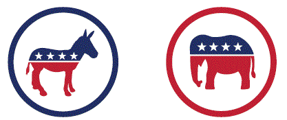
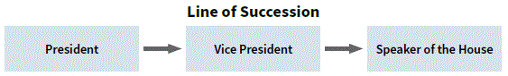

NOTE: click on red numbers to see related questions from the 2025 citizenship test.
NOTA: haga clic en los números rojos para ver las preguntas relacionadas del examen de ciudadanía de 2025.
[p24]
In this chapter, you will learn about:
The Executive Branch is one branch or part of the U.S. government. The President of the United States is in charge of the Executive Branch.[q17]
The other parts of the Executive Branch are the President's Cabinet, the Vice President of the United States, and the Executive Departments and agencies in the federal government.[q46]
During the Constitutional Convention, the Founders were afraid that if the President had too much power, then the President would be above the law and could become a king or queen. The Founders believed that in the United States no one is above the law. This is called the "rule of law".[q13] The Founders believed that the President should have the power to protect and serve the people of the United States. They also believed that the President should follow the rule of law.
[p24]
En este capítulo, aprenderá sobre:
La Rama Ejecutiva es una rama o parte del gobierno de los Estados Unidos. El Presidente de los Estados Unidos está a cargo de la Rama Ejecutiva.
Las otras partes de la Rama Ejecutiva son el Gabinete del Presidente, el Vicepresidente de los Estados Unidos, y los Departamentos Ejecutivos y agencias del gobierno federal.
Durante la Convención Constitucional, los Fundadores temían que si el Presidente tuviera demasiado poder, entonces el Presidente estaría por encima de la ley y podría convertirse en un rey o reina. Los Fundadores creían que en los Estados Unidos nadie está por encima de la ley. Esto se llama el "estado de derecho". Los Fundadores creían que el Presidente debería tener el poder de proteger y servir al pueblo de los Estados Unidos. También creían que el Presidente debería seguir el estado de derecho.
The Executive Branch includes the Executive Departments and agencies that are part of the federal government. The Executive Departments and agencies help the President to enforce laws, protect the country, work with other countries, and provide services to the people of the United States.
The people who lead the Executive Departments are mostly called Secretaries. For example, the person who leads the Department of Homeland Security is called the Secretary of Homeland Security.
La Rama Ejecutiva incluye los Departamentos Ejecutivos y las agencias que son parte del gobierno federal. Los Departamentos Ejecutivos y las agencias ayudan al Presidente a hacer cumplir las leyes, proteger el país, trabajar con otros países, y proporcionar servicios al pueblo de los Estados Unidos.
Las personas que lideran los Departamentos Ejecutivos se llaman mayormente Secretarios. Por ejemplo, la persona que lidera el Departamento de Seguridad Nacional se llama el Secretario de Seguridad Nacional.
[p25]
[Diagram: U.S. Government — Legislative Branch (Congress), Executive Branch (President), Judicial Branch (Supreme Court)]
The leaders of the Executive Departments are also called Cabinet-level positions because the people who lead each agency are part of the President's Cabinet. A "cabinet" is another word for a "group of advisors." The President's Cabinet advises the President.[q47]
The President can also choose to have other people from the federal government serve on the Cabinet.
Each Executive Department has many smaller agencies. For example, the Federal Bureau of Investigation (FBI) is part of the Department of Justice. Another example is U.S. Citizenship and Immigration Services (USCIS). USCIS is part of the Department of Homeland Security.
[Photo: President Donald J. Trump's Cabinet, 2025.]
The Cabinet-level positions include:
The leader of the Department of Justice is not called a "Secretary." The leader of the Department of Justice is called the Attorney General.
[p25]
[Diagrama: Gobierno de los Estados Unidos — Rama Legislativa (Congreso), Rama Ejecutiva (Presidente), Rama Judicial (Corte Suprema)]
Los líderes de los Departamentos Ejecutivos también se llaman posiciones a nivel de Gabinete porque las personas que lideran cada agencia son parte del Gabinete del Presidente. Un "gabinete" es otra palabra para un "grupo de asesores". El Gabinete del Presidente asesora al Presidente.
El Presidente también puede elegir que otras personas del gobierno federal sirvan en el Gabinete.
Cada Departamento Ejecutivo tiene muchas agencias más pequeñas. Por ejemplo, la Oficina Federal de Investigación (FBI) es parte del Departamento de Justicia. Otro ejemplo es el Servicio de Ciudadanía e Inmigración de los Estados Unidos (USCIS). USCIS es parte del Departamento de Seguridad Nacional.
[Foto: Gabinete del Presidente Donald J. Trump, 2025.]
Las posiciones a nivel de Gabinete incluyen:
El líder del Departamento de Justicia no se llama "Secretario". El líder del Departamento de Justicia se llama el Fiscal General.
[p26]
The President of the United States is the Commander in Chief of the military.[q42] This means that the President is in charge of everyone serving in U.S. military.[q41] Another term for the U.S. military is the U.S. Armed Forces.
In the United States, serving in the U.S. Armed Forces is voluntary. Today there are over 2 million people serving in the U.S. Armed Forces. For more information about the U.S. Armed Forces, please visit: U.S. Department of Defense at defense.gov.
There are six branches of the U.S. Armed Forces:
[Seals of the six branches of the U.S. Armed Forces: Army, Marine Corps, Navy, Air Force, Space Force, Coast Guard]
[p26]
El Presidente de los Estados Unidos es el Comandante en Jefe de las fuerzas armadas. Esto significa que el Presidente está a cargo de todos los que sirven en las fuerzas armadas de los Estados Unidos. Otro término para las fuerzas armadas de los Estados Unidos son las Fuerzas Armadas de los Estados Unidos.
En los Estados Unidos, servir en las Fuerzas Armadas de los Estados Unidos es voluntario. Hoy en día hay más de 2 millones de personas sirviendo en las Fuerzas Armadas de los Estados Unidos. Para más información sobre las Fuerzas Armadas de los Estados Unidos, por favor visite: Departamento de Defensa de los Estados Unidos en defense.gov.
Hay seis ramas de las Fuerzas Armadas de los Estados Unidos:
[Escudos de las seis ramas de las Fuerzas Armadas de los Estados Unidos: Ejército, Cuerpo de Marines, Marina, Fuerza Aérea, Fuerza Espacial, Guardia Costera]
U.S. citizens vote for President in November, and the President is elected for four years.[q36] [q49] A person can only be elected to be President two times.[q37] This means a person can get elected for four years, and then get reelected for four more years.See note.
When a person runs for President of the United States they are nominated by a political party. Today, there are two major political parties in the United States. One party is called the Democratic Party, and the other party is called the Republican Party.
To find the name of the President of the United States now[q38], please visit: whitehouse.gov.
[A donkey icon represents the Democratic Party. An Elephant icon represents the Republican Party.]
[Photo: A young woman cast her ballot in the 1964 presidential election. Courtesy of the Library of Congress.]
Los ciudadanos de los Estados Unidos votan por el Presidente en noviembre, y el Presidente es elegido por cuatro años. Una persona solo puede ser elegida para ser Presidente dos veces. Esto significa que una persona puede ser elegida por cuatro años, y luego ser reelegida por cuatro años más.Vea nota.
Cuando una persona se postula para Presidente de los Estados Unidos es nominada por un partido político. Hoy en día, hay dos partidos políticos principales en los Estados Unidos. Un partido se llama el Partido Demócrata, y el otro partido se llama el Partido Republicano.
Para encontrar el nombre del Presidente de los Estados Unidos ahora, por favor visite: whitehouse.gov.
[Un ícono de burro representa al Partido Demócrata. Un ícono de elefante representa al Partido Republicano.]
[Foto: Una joven emitió su voto en la elección presidencial de 1964. Cortesía de la Biblioteca del Congreso.]
[p27]
[Photo: President Donald Trump, 45th & 47th President of the United States. President William McKinley, 25th President of the United States.]
The Vice President of the United States works for the President in the Executive Branch. The Vice President is the President of the Senate, an advisor to the President, and a member of the President's Cabinet.
Under the Constitution, the role of the Vice President is very important. The Constitution says that if the President can no longer serve, then the Vice President becomes President.[q40] There have been some Presidents who have not served all four years of their term. For example, there are Presidents who died while serving in office. When this has happened, the Vice President becomes the President.
To find the name of the Vice President of the United States now[q39], please visit: whitehouse.gov.
If both the President and the Vice President can no longer serve, then the Speaker of the House of Representatives becomes President.
[Diagram: Line of Succession — President → Vice President → Speaker of the House]
To find the name of the current Speaker of the House[q30], please visit: speaker.gov.
[p27]
[Foto: Presidente Donald Trump, 45º y 47º Presidente de los Estados Unidos. Presidente William McKinley, 25º Presidente de los Estados Unidos.]
El Vicepresidente de los Estados Unidos trabaja para el Presidente en la Rama Ejecutiva. El Vicepresidente es el Presidente del Senado, un asesor del Presidente, y un miembro del Gabinete del Presidente.
Bajo la Constitución, el papel del Vicepresidente es muy importante. La Constitución dice que si el Presidente ya no puede servir, entonces el Vicepresidente se convierte en Presidente. Ha habido algunos Presidentes que no han servido los cuatro años completos de su mandato. Por ejemplo, hay Presidentes que murieron mientras servían en el cargo. Cuando esto ha sucedido, el Vicepresidente se convierte en el Presidente.
Para encontrar el nombre del Vicepresidente de los Estados Unidos ahora, por favor visite: whitehouse.gov.
Si tanto el Presidente como el Vicepresidente ya no pueden servir, entonces el Presidente de la Cámara de Representantes se convierte en Presidente.
[Diagrama: Línea de Sucesión — Presidente → Vicepresidente → Presidente de la Cámara de Representantes]
Para encontrar el nombre del Presidente de la Cámara actual, por favor visite: speaker.gov.
What is the rule of law?
The President of the United States is in charge of which branch of government?
What is the name of the Speaker of the House of Representatives now? *
The President of the United States is elected for how many years? *
The President of the United States can serve only two terms. Why?
What is the name of the President of the United States now? *
What is the name of the Vice President of the United States now? *
If the president can no longer serve, who becomes president?
Name one power of the president.
Who is Commander in Chief of the U.S. military?
The executive branch has many parts. Name one.
What does the President's Cabinet do?
What are two Cabinet-level positions?
Why is the Electoral College important?